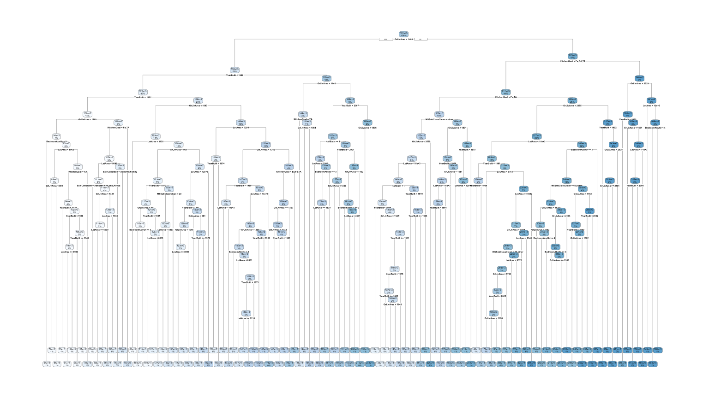
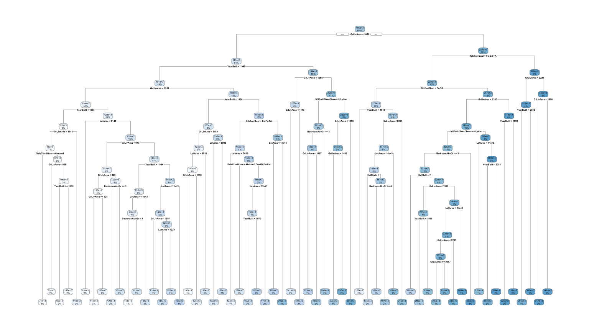
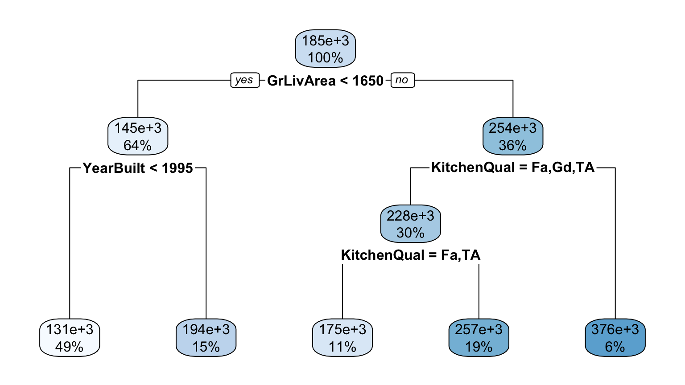
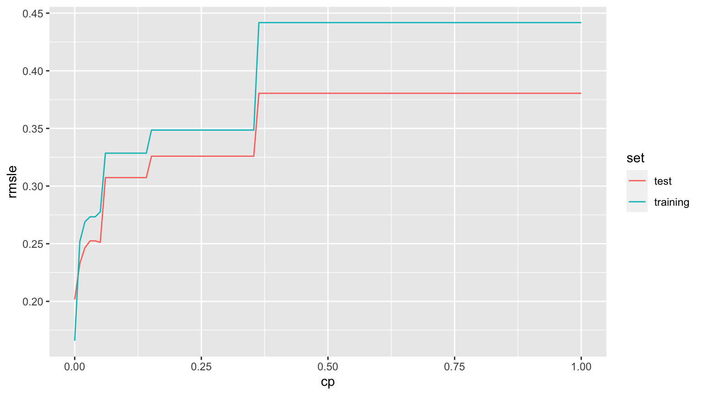
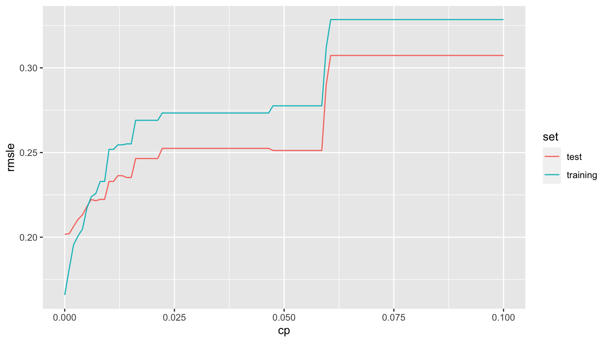
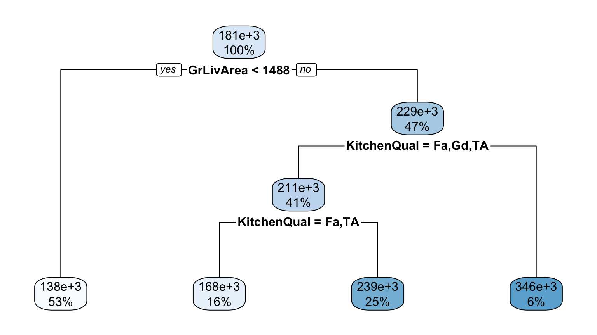
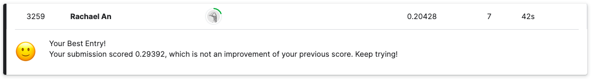

# Replace missing value in KitchenQual variable in test set
test <- test %>%
mutate(KitchenQual = ifelse(!is.na(KitchenQual), KitchenQual, "TA"))
# Deal with categorical predictor MSSubClass that had a level in test
# data that didn't exist in training data. Do this by lumping all but
# top two levels in new level "other". Remember to do this to both
# training and test
training <- training %>%
mutate(MSSubClassClean = ifelse(MSSubClass %in% c("20", "60"), MSSubClass, "other"))
test <- test %>%
mutate(MSSubClassClean = ifelse(MSSubClass %in% c("20", "60"), MSSubClass, "other"))
# Restrict to just the variables we'll use
training <- training %>%
select(Id, GrLivArea, YearBuilt, BedroomAbvGr, SaleCondition, KitchenQual,
MSSubClassClean, HalfBath, LotArea, SalePrice)
test <- test %>%
select(Id, GrLivArea, YearBuilt, BedroomAbvGr, SaleCondition, KitchenQual,
MSSubClassClean, HalfBath, LotArea)Classification and Regression Trees
1 Instructions
Participate in Kaggle’s House Prices: Advanced Regression Techniques competition, where among other things you will:
- Fit CART models, specifically regression models to a continuous outcome variable y
- Compare different estimates of the RMSLE score on the test data returned by Kaggle
- Study how the complexity parameter cp affects the various RMSLE scores we can compute. This is the \(\alpha\) parameter from the equation that CART tries to minimize for numerical y \(RSS + \alpha |T|\). Note such parameters that control the degree of learning are also called “hyperparameters”
- Identify an optimal cp to make a Kaggle submission to.
1.1 Suggested workflow
- Knit this file and read all instructions
- This problem set is a step up in complexity. Follow the Minimally Viable Product approach
- On Moodle, submit a
.zipcompressed/archived file of this entire RStudio project folder. We are doing this to ensure the graders can reproduce your Quarto file.

1.2 Evaluation criteria
Grading will be done on a progressive scale:
- Minimum Viable Product Phase 1 (6/10)
- Did you complete honor code section?
- Does your Quarto file knit? Submissions that don’t knit will be penalized harshly. So render early, render often.
- All questions in this phase
- Due Diligence Phase 2 (7/10)
- Successful completion of all previous phases
- All questions in this phase
- Phase 3 (8/10)
- Successful completion of all previous phases
- All questions in this phase
- Phase 4 (9/10)
- Successful completion of all previous phases
- All questions in this phase
- Phase 5 (9.5/10)
- Successful completion of all previous phases
- All questions in this phase
- Point of Diminished Returns Phase 6 (10/10)
- Successful completion of all previous phases
- All questions in this phase
2 Honor Code
- Indicate anybody you collaborated with:
- Indicate that you did not directly copy anybody else’s code: I did not directly copy anybody else’s code.
- Indicate that you did not use ChatGPT for this problem set: I did not use ChatGPT for this problem set.
3 Model using previously seen variables
Here are the variables we’ll use in our CART model:
- Outcome variable
SalePricedirectly i.e. don’t log-transform it - The 6 predictor variables from the PS1 solutions
- The HalfBath variable from the lecture on overfitting
- LotArea
Below is the data pre-processing necessary to
4 MVP Phase 1: Get scores for training and test data
Let’s consider a CART model with the above variables and cp = \(\alpha\) = 0. Let’s compute both the real Kaggle score on the test data and our first estimate of this score: the score on the training data.
4.1 Fit and visualize
First, fit this model and visualize it using rpart.plot::rpart.plot(), which IMO is an improvement over the base R generic plot() function
# create CART model with cp of 0
model_CART <- rpart(SalePrice ~ GrLivArea + YearBuilt + BedroomAbvGr + SaleCondition + KitchenQual + MSSubClassClean + HalfBath + LotArea, data = training, cp = 0)
# plot CART model
rpart.plot(model_CART)
4.2 Compute scores
Compute and write your scores here:
- Training set score: 0.15220
- Test set score from Kaggle: 0.20428
Answer this question: Why do we observe the discrepancy between these two scores? The complex model caters too much to the training model (score is much lower than test), hindering its applicability to other data.
# add predicted values from CART model
training <- data_frame(training, y_hat = predict(model_CART))
# find rmsle for training data
rmsle_training <- sqrt((sum((log(training$y_hat + 1) - log(training$SalePrice + 1))^2))/(nrow(training)))# predict sales price on test using fitted/trained model
test$SalePrice <- predict(model_CART, newdata = test)# add sales price values to submission file
submission <- sample_submission %>%
mutate(SalePrice = test$SalePrice)
# convert into file
write_csv(submission, path = "data/submission.csv")5 Due Diligence Phase 2: Get a better estimate of the Kaggle score
Using the same model with cp = 0 from above, obtain an estimate of the test set score Kaggle returns using the method from the overfitting.R lecture. Do not change the random number seed nor the training set split method from overfitting.R, so that all submissions will have the same split. Write your scores here:
- train_validation score: 0.16586
- test_validation score: 0.20169
Answer these questions:
- Which of the above two scores is the estimate of the Kaggle score? test_validation score
- Is this estimate of the Kaggle score better than the previous one? Why? This estimate of the Kaggle score is slightly better than the previous one because the train split is randomly generated. The randomly generated data mimics unseen data and allows it to build a better model for the test data. Using just the test data exposes the model to new characteristics that the model is not familiar with.
# set seed
set.seed(76)
# split training data into train_validation and test_validation
train_validation <- training %>%
sample_frac(0.5)
test_validation <- training %>%
anti_join(train_validation, by = "Id")
# check that the data has been split correctly
nrow(training)[1] 1460nrow(train_validation) + nrow(test_validation)[1] 1460# CART model for train_validation
model_CART_split <- rpart(SalePrice ~ GrLivArea + YearBuilt + BedroomAbvGr + SaleCondition + KitchenQual + MSSubClassClean + HalfBath + LotArea,
data = train_validation,
control = rpart.control(cp = 0))
# plot CART model
rpart.plot(model_CART_split)
# add predicted values from CART model fitted on train_validation
test_validation$SalePrice_hat <- predict(model_CART_split, newdata = test_validation)
# add predicted values from CART model to train_validation
train_validation <- data_frame(train_validation, SalePrice_hat = predict(model_CART_split))
# find rmsle of train and test split
rmsle_train_validation <- sqrt((sum((log(train_validation$SalePrice_hat + 1) - log(train_validation$SalePrice + 1))^2))/(nrow(train_validation)))
rmsle_test_validation <- sqrt((sum((log(test_validation$SalePrice_hat + 1) - log(test_validation$SalePrice + 1))^2))/(nrow(test_validation)))6 Phase 3: Using a different cp value
Choose any different value of cp and obtain a new estimate of the Kaggle score. Write your scores here:
After choosing cp = 0.05, I got the following scores: - train_validation score: 0.27760 - test_validation score: 0.25121
Answer these questions:
- Without making a submission to Kaggle to see your actual score, which cp value would you use for your Kaggle submission? cp = 0 or your new value? New value
- Why? I would use the model of cp = 0.05 because too much complexity when cp = 0 has many drawbacks. The overly complex CART model does not predict well to unseen data due to overfitting and leads to expensive, increased computational costs when cp = 0.
# set seed
set.seed(76)
# split training data into train_validation and test_validation
train_validation_new_cp <- training %>%
sample_frac(0.5)
test_validation_new_cp <- training %>%
anti_join(train_validation_new_cp, by = "Id")
# check that the data has been split correctly
nrow(training)[1] 1460nrow(train_validation_new_cp) + nrow(test_validation_new_cp)[1] 1460# CART model for train_validation
model_CART_split_new_cp <- rpart(SalePrice ~ GrLivArea + YearBuilt + BedroomAbvGr + SaleCondition + KitchenQual + MSSubClassClean + HalfBath + LotArea,
data = train_validation_new_cp,
control = rpart.control(cp = 0.05))
# plot CART model
rpart.plot(model_CART_split_new_cp)
# add predicted values from CART model fitted on train_validation
test_validation_new_cp$SalePrice_hat <- predict(model_CART_split_new_cp, newdata = test_validation_new_cp)
# add predicted values from CART model to train_validation
train_validation_new_cp <- data_frame(train_validation_new_cp, SalePrice_hat = predict(model_CART_split_new_cp))
# find rmsle of train and test split
rmsle_train_validation_new_cp <- sqrt((sum((log(train_validation_new_cp$SalePrice_hat + 1) - log(train_validation_new_cp$SalePrice + 1))^2))/(nrow(train_validation_new_cp)))
rmsle_test_validation_new_cp <- sqrt((sum((log(test_validation_new_cp$SalePrice_hat + 1) - log(test_validation_new_cp$SalePrice + 1))^2))/(nrow(test_validation_new_cp)))7 Phase 4: Using several different cp values
- Repeat the above process for at least 100 different cp values
- Plot all the scores in a ggplot with the following aesthetics:
- x-axis: cp complexity parameter
- y-axis: RMSLE
- color: training vs test set (i.e. your visualization should have two curves of different colors)
Qualitatively describe what you think are the two or three of the most salient patterns in this graph when it comes to understanding model complexity:
The rmsle remains constant (test = 0.38, train = 0.44) when cp > 0.35 for the training and test set.
The rmsle is more sensitive when cps are small for both training and test sets.
When 0 < cp < 0.06, the rmsle increases at the fastest pace for both training and test sets.
# number of values to generate for test and training
n_values <- 100
# generate 100 cp values from 0 to 1
cp_grid <- seq(from = 0, to = 1, length=n_values)
# generate 100 cp values to include cps from optimal range
cp_grid1 <- seq(from = 0, to = 0.1, length=n_values)
# set seed
set.seed(76)
# split training data into train_validation and test_validation
train_validation_cp <- training %>%
sample_frac(0.5)
test_validation_cp <- training %>%
anti_join(train_validation_cp, by = "Id")
# get rmsle for train validation
get_rmsle_train <- function(cp) {
# create model for chosen value for cp
model_CART_split_cp <- rpart(SalePrice ~ GrLivArea + YearBuilt + BedroomAbvGr + SaleCondition + KitchenQual + MSSubClassClean + HalfBath + LotArea,
data = train_validation_cp,
control = rpart.control(cp = cp))
# predict CART model on train validation
train_validation_cp <- data_frame(train_validation_cp, SalePrice_hat = predict(model_CART_split_cp))
# calculate rmsle for train validation
rmsle_train_cp <- sqrt((sum((log(train_validation_cp$SalePrice_hat + 1) - log(train_validation_cp$SalePrice + 1))^2))/(nrow(train_validation_cp)))
# remove sale price hat or creates error
train_validation_cp <- subset(train_validation_cp, select = -c(SalePrice_hat))
# return rmsle train validation score
return(rmsle_train_cp)
}
# get rmsle for test validation
get_rmsle_test <- function(cp) {
# create model for chosen value for cp
model_CART_split_cp <- rpart(SalePrice ~ GrLivArea + YearBuilt + BedroomAbvGr + SaleCondition + KitchenQual + MSSubClassClean + HalfBath + LotArea,
data = train_validation_cp,
control = rpart.control(cp = cp))
# predict CART model on test validation
test_validation_cp$SalePrice_hat <- predict(model_CART_split_cp, newdata = test_validation_cp)
# calculate rmsle for test validation
rmsle_test_cp <- sqrt((sum((log(test_validation_cp$SalePrice_hat + 1) - log(test_validation_cp$SalePrice + 1))^2))/(nrow(test_validation_cp)))
# remove sale price hat or creates error
test_validation_cp <- subset(test_validation_cp, select = -c(SalePrice_hat))
# return rmsle test validation score
return(rmsle_test_cp)
}
# initialize train and test rmsle vectors
train_rmsle_vec <- numeric(length(cp_grid))
test_rmsle_vec <- numeric(length(cp_grid))
# Iterate over each cp value
for (i in seq_along(cp_grid)) {
# Compute RMSLE for the current cp value
rmsle_train <- get_rmsle_train(cp_grid[i])
rmsle_test <- get_rmsle_test(cp_grid[i])
# Insert the computed RMSLE into train_rmsle_vec and test_rmsle_vec
train_rmsle_vec[i] <- rmsle_train
test_rmsle_vec[i] <- rmsle_test
}
# focus on a lower cp range for more detailed analysis
# initialize train and test rmsle vectors for lower cp range
train_rmsle_vec_low_cp <- numeric(length(cp_grid1))
test_rmsle_vec_low_cp <- numeric(length(cp_grid1))
# Iterate over each cp value
for (i in seq_along(cp_grid1)) {
# Compute RMSLE for the current cp value
rmsle_train1 <- get_rmsle_train(cp_grid1[i])
rmsle_test1 <- get_rmsle_test(cp_grid1[i])
# Insert the computed RMSLE into train_rmsle_vec and test_rmsle_vec
train_rmsle_vec_low_cp[i] <- rmsle_train1
test_rmsle_vec_low_cp[i] <- rmsle_test1
}
# create table for rmsle values of train and test validation for cp values from 0 to 1
rmsle <- tibble(
cp = cp_grid,
training = unlist(train_rmsle_vec),
test = unlist(test_rmsle_vec)
) %>%
pivot_longer(-cp, names_to = "set", values_to = "rmsle")
# plot rmsle values for train and test on cps from 0 to 1
ggplot(rmsle, aes(x=cp, y=rmsle, col = set)) +
geom_line()
# create table for rmsle values of train and test validation for cp values from 0 to 0.1
rmsle1 <- tibble(
cp = cp_grid1,
training = unlist(train_rmsle_vec_low_cp),
test = unlist(test_rmsle_vec_low_cp)
) %>%
pivot_longer(-cp, names_to = "set", values_to = "rmsle")
# plot rmsle values for train and test on cps from 0 to 0.1
ggplot(rmsle1, aes(x=cp, y=rmsle, col = set)) +
geom_line()
8 Phase 5: Choosing an optimal cp
Based on your results in the previous section, identify the “optimal” cp to use and make a submission to kaggle using this value of cp and obtain your score. Write the following values:
- What is your optimal cp value? 0.058586
- What is your estimate of the RMSLE score returned by Kaggle associated with this optimal cp value? 0.27760
- What is the actual Kaggle score associated with this optimal cp value? 0.29392
- Which Kaggle score is better? The one for cp = 0 or for your optimal cp value? ( No need to answer why.) The Kaggle score for cp = 0 is better.
# create CART model with optimal cp chosen to balance complexity and fit
model_CART_optimal_cp <- rpart(SalePrice ~ GrLivArea + YearBuilt + BedroomAbvGr + SaleCondition + KitchenQual + MSSubClassClean + HalfBath + LotArea, data = training, cp = 0.05858)
# plot CART model of optimal cp
rpart.plot(model_CART_optimal_cp)
# predict sales price on test using fitted/trained model
test$SalePrice <- predict(model_CART_optimal_cp, newdata = test)
# add sales price values to submission file
submission_optimal_cp <- sample_submission %>%
mutate(SalePrice = test$SalePrice)
# convert into file
write_csv(submission, path = "data/submission_optimal_cp.csv")8.1 Make Kaggle submission and post screenshot
After making your submission on Kaggle, take a screenshot, and replace the image of my score with the image of yours below.

9 Point of Diminished Returns Phase 6: Improving Kaggle test set score estimates
Implement a mechanism for further improving the estimate for the Kaggle score yielded by the train_validation and test_validation split.
I implemented 10-fold cross validation as follows:
# set seed
set.seed(76)
# define 10 folds for 10-fold cross validation
num_folds <- 10
# randomly split the data into 10 folds
folds <- createFolds(training$SalePrice, k = num_folds, list = TRUE, returnTrain = FALSE)
# initialize a vector to hold k-fold numbers
index <- rep(NA, nrow(training))
# iterate along folds
for (i in seq_along(folds)) {
# add fold numbers to index vector
index[folds[[i]]] <- i
}
# add the index column to your dataset
training <- cbind(index = index, training)
# initialize vector to hold 10 rmsle scores of test_validation
rmsle_score <- rep(0, num_folds)
# iterate along k folds
for (i in 1:num_folds) {
# initialize test and train validation
test_validation_k_fold <- training |>
filter(index == i)
train_validation_k_fold <- training |>
filter(index != i)
# fit a CART model of cp 0
model_CART_k_fold <- rpart(SalePrice ~ GrLivArea + YearBuilt + BedroomAbvGr + SaleCondition + KitchenQual + MSSubClassClean + HalfBath + LotArea, data = train_validation_k_fold, cp = 0)
# predict sales price on test validation using fitted/trained model on train validation
test_validation_k_fold$SalePrice_hat <- predict(model_CART_k_fold, newdata = test_validation_k_fold)
# calculate rmsle score for the ith fold and add it to the rmsle_score vector
rmsle_score[i] <- sqrt((sum((log(test_validation_k_fold$SalePrice_hat + 1) - log(test_validation_k_fold$SalePrice + 1))^2))/(nrow(test_validation_k_fold)))
}
# find average among k rmsle scores
avg_rmsle <- mean(rmsle_score)The estimated rmsle score of 0.198 is better than the test_validation score of 0.202 when cp = 0.